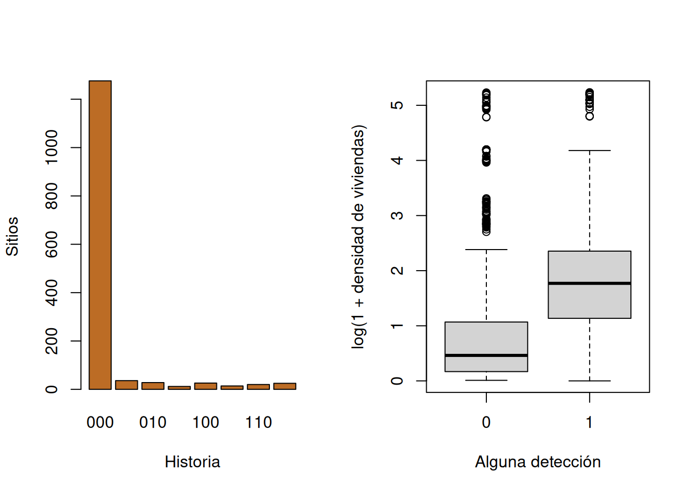
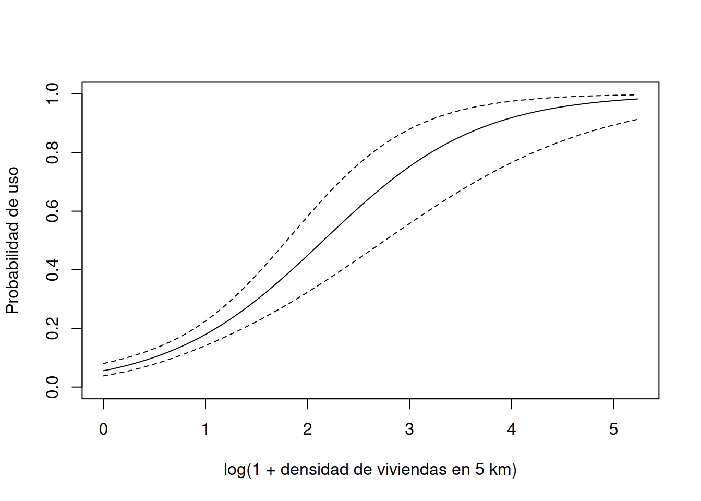

if (!requireNamespace("unmarked", quietly = TRUE)) {
stop("Se requiere el paquete 'unmarked' para ejecutar este capítulo.")
}
suppressPackageStartupMessages(library(unmarked))
data("MesoCarnivores", package = "unmarked")
y <- MesoCarnivores$redfox
sitios <- MesoCarnivores$sitecovs
stopifnot(is.matrix(y), ncol(y) == 3L, nrow(y) == nrow(sitios),
all(y %in% c(0, 1)), !anyNA(y),
all(c("HDens_5km", "People_site", "Trail") %in% names(sitios)),
all(sitios$HDens_5km >= 0), all(sitios$Trail %in% 0:1))
auditoria_occ <- data.frame(
sitios = nrow(y), visitas = ncol(y), detecciones = sum(y),
sitios_detectados = sum(rowSums(y) > 0),
faltantes_y = sum(is.na(y)), faltantes_cov = sum(is.na(sitios))
)
auditoria_occ
#> sitios visitas detecciones sitios_detectados faltantes_y faltantes_cov
#> 1 1437 3 257 161 0 07 Ocupación y detección imperfecta
Historias repetidas para separar estado y observación
7.1 Ausencia observada y estado latente
No detectar una especie puede significar ausencia o presencia no observada. Los modelos de ocupación usan visitas repetidas para separar ambos procesos. Para el sitio \(i\),
\[ z_i\sim\operatorname{Bernoulli}(\psi_i),\qquad y_{ij}\mid z_i\sim\operatorname{Bernoulli}(z_i p_{ij}), \]
donde \(z_i\) es presencia durante la temporada, \(\psi_i\) la probabilidad de ocupación y \(p_{ij}\) la detección condicional en presencia. En tres visitas,
\[ P(000)=(1-\psi)+\psi(1-p)^3. \]
Una historia positiva confirma detección; 000 es una mezcla. Con una sola visita solo se observa aproximadamente \(\psi p\), y ambos parámetros no se separan sin información adicional (Manly y Navarro Alberto 2015; Sutherland 2006).
7.2 Diseño y significado
La unidad es un sitio definido espacialmente y las réplicas son visitas dentro de una temporada suficientemente corta. Para especies móviles, el parámetro suele ser probabilidad de uso del sitio, no residencia exclusiva. Aumentar el tamaño del sitio puede aumentar \(\psi\); aumentar duración o calidad de búsqueda puede aumentar \(p\). Por eso toda estimación debe declarar ambas escalas (Henderson y Southwood 2016).
Con enlaces logit,
\[ \operatorname{logit}(\psi_i)=\boldsymbol{x}_i^T\boldsymbol\beta, \qquad \operatorname{logit}(p_{ij})=\boldsymbol{w}_{ij}^T\boldsymbol\alpha. \]
Las covariables de sitio describen estado; clima, duración, observador, sendero o equipo suelen describir detección. Una variable puede afectar ambos procesos, pero modelos recargados no son identificables con pocas historias positivas. Conviene formular pocas relaciones antes de ajustar (Lohr 2022).
7.3 Supuestos
- el estado no cambia entre visitas, o el estimando se redefine como uso;
- sitios son independientes al nivel de inferencia;
- no hay falsas detecciones o se usa verificación suficiente;
- detecciones repetidas están vinculadas al sitio correcto;
- visitas omitidas son
NA, nunca cero; - heterogeneidad importante de \(p\) y \(\psi\) está representada;
- covariables se miden en la escala y antes del proceso que pretenden explicar;
- el marco de sitios y su selección permiten la generalización declarada.
El cierre puede fallar por migración o amplias separaciones entre visitas. La independencia falla si cámaras vecinas observan el mismo ámbito de hogar. Falsos positivos, especialmente en identificación acústica, pueden inflar \(\psi\). Ningún criterio de información diagnostica por sí solo estos problemas de diseño.
7.4 Aplicación real: zorro rojo en cámaras
7.4.1 Procedencia, pregunta y estimando
unmarked::MesoCarnivores contiene historias de tres visitas para 1 437 sitios y varias especies de mesocarnívoros, junto con covariables del sitio. Usaremos zorro rojo (redfox). El paquete documenta detección binaria, densidad de viviendas en 5 km (HDens_5km), detecciones de personas y ubicación sobre sendero (Trail).
La pregunta es: ¿cómo cambia el uso por zorro rojo a lo largo del gradiente de densidad de viviendas, separando la mayor detectabilidad de cámaras sobre senderos? El estimando es \(\psi\) para sitios del conjunto durante la ventana de tres visitas; \(p\) es la probabilidad de detección por visita condicional en uso (Rota et al. 2016; Kellner et al. 2023). La asociación no es un efecto causal de urbanización.
7.4.2 Disponibilidad, importación y auditoría
No hay visitas faltantes. La unidad de HDens_5km debe conservarse como la define el conjunto; para modelar se usa log1p y estandarización, de modo que el coeficiente represente una desviación estándar en la escala transformada.
7.4.3 Exploración de historias y covariables
historia <- apply(y, 1, paste0, collapse = "")
sort(table(historia), decreasing = TRUE)
#> historia
#> 000 001 010 100 111 110 101 011
#> 1276 36 28 26 25 20 14 12
colSums(y)
#> X1 X2 X3
#> 85 85 87
sitios$detectado <- as.integer(rowSums(y) > 0)
sitios$HDens_log <- log1p(sitios$HDens_5km)
sitios$HDens_z <- as.numeric(scale(sitios$HDens_log))
sitios$Trail <- factor(sitios$Trail, levels = 0:1)
op <- par(mfrow = c(1, 2))
barplot(table(historia), col = "#bc6c25", xlab = "Historia",
ylab = "Sitios")
boxplot(HDens_log ~ detectado, sitios, xlab = "Alguna detección",
ylab = "log(1 + densidad de viviendas)")
par(op)
with(sitios, table(Trail, detectado))
#> detectado
#> Trail 0 1
#> 0 900 73
#> 1 376 88La proporción con alguna detección es un límite inferior ingenuo de uso. La diferencia descriptiva por viviendas mezcla \(\psi\) y \(p\); la tabla de sendero sugiere representar primero el proceso de detección.
7.4.4 Ajuste parsimonioso
umf <- unmarked::unmarkedFrameOccu(y = y, siteCovs = sitios)
ajuste_occ <- unmarked::occu(~ Trail ~ HDens_z, data = umf)
coeficientes <- data.frame(
parametro = names(coef(ajuste_occ)), estimacion = coef(ajuste_occ),
SE = unmarked::SE(ajuste_occ)
)
coeficientes$LI <- coeficientes$estimacion - 1.96 * coeficientes$SE
coeficientes$LS <- coeficientes$estimacion + 1.96 * coeficientes$SE
coeficientes
#> parametro estimacion SE LI LS
#> psi(Int) psi(Int) -1.512481 0.1445322 -1.795764 -1.229197
#> psi(HDens_z) psi(HDens_z) 1.544292 0.2248407 1.103604 1.984979
#> p(Int) p(Int) -1.795277 0.1544313 -2.097962 -1.492592
#> p(Trail1) p(Trail1) 1.955711 0.1879637 1.587302 2.324120La primera fórmula modela detección y la segunda ocupación. Los coeficientes están en log-odds y se comunican mejor mediante probabilidades predichas.
7.4.5 Estimación e incertidumbre
pred_p <- unmarked::predict(ajuste_occ, type = "det",
newdata = data.frame(Trail = factor(0:1, levels = 0:1)))
pred_p$ubicacion <- c("fuera de sendero", "sobre sendero")
pred_p
#> Predicted SE lower upper ubicacion
#> 1 0.1424270 0.01886248 0.1092956 0.1835322 fuera de sendero
#> 2 0.5400227 0.03870208 0.4638280 0.6143915 sobre sendero
q_hdens <- quantile(sitios$HDens_5km, c(0.1, 0.5, 0.9))
z_hdens <- (log1p(q_hdens) - mean(sitios$HDens_log)) / sd(sitios$HDens_log)
pred_psi <- unmarked::predict(ajuste_occ, type = "state",
newdata = data.frame(HDens_z = as.numeric(z_hdens)))
pred_psi$HDens_5km <- as.numeric(q_hdens)
pred_psi
#> Predicted SE lower upper HDens_5km
#> 1 0.06091248 0.01095107 0.04266820 0.08625487 0.07711392
#> 2 0.10796651 0.01385279 0.08366237 0.13826573 0.73104281
#> 3 0.56925775 0.08215650 0.40664039 0.71819348 9.66415268
grid_h <- seq(min(sitios$HDens_log), max(sitios$HDens_log), length.out = 150)
grid_z <- (grid_h - mean(sitios$HDens_log)) / sd(sitios$HDens_log)
curva <- unmarked::predict(ajuste_occ, type = "state",
newdata = data.frame(HDens_z = grid_z))
plot(grid_h, curva$Predicted, type = "l", ylim = c(0, 1),
xlab = "log(1 + densidad de viviendas en 5 km)",
ylab = "Probabilidad de uso")
lines(grid_h, curva$lower, lty = 2)
lines(grid_h, curva$upper, lty = 2)
Los intervalos son Wald condicionados en la forma logit, transformación elegida, independencia y ausencia de falsas detecciones. Las predicciones en cuantiles evitan extrapolar más allá del gradiente observado.
7.4.6 Diagnóstico por historias
Comparamos frecuencias observadas con las esperadas sitio a sitio. Para cada sitio se usan sus \(\widehat\psi_i\) y \(\widehat p_i\); 000 incluye ausencia verdadera.
psi_hat <- unmarked::predict(ajuste_occ, type = "state")$Predicted
p_hat <- unmarked::predict(ajuste_occ, type = "det",
newdata = data.frame(Trail = sitios$Trail))$Predicted
H <- sort(apply(expand.grid(rep(list(0:1), 3)), 1,
paste0, collapse = ""))
esperada <- vapply(H, function(h) {
z <- as.integer(strsplit(h, "")[[1]])
pr_det <- p_hat^sum(z) * (1 - p_hat)^(3 - sum(z))
if (h == "000") sum((1 - psi_hat) + psi_hat * pr_det) else
sum(psi_hat * pr_det)
}, numeric(1))
observada <- as.numeric(table(factor(historia, levels = H)))
diag_hist <- data.frame(historia = H, observada, esperada,
pearson = (observada - esperada) / sqrt(esperada))
diag_hist
#> historia observada esperada pearson
#> 000 000 1276 1267.33217 0.2434810
#> 001 001 36 35.17303 0.1394386
#> 010 010 28 35.17303 -1.2094780
#> 011 011 12 16.36065 -1.0780790
#> 100 100 26 35.17303 -1.5467071
#> 101 101 14 16.36065 -0.5836206
#> 110 110 20 16.36065 0.8997546
#> 111 111 25 15.06679 2.5590531
T_obs <- sum((observada - esperada)^2 / esperada)
T_obs
#> [1] 12.79504Residuos grandes en una visita concreta sugieren diferencias temporales de \(p\); exceso simultáneo de 000 y 111 puede indicar heterogeneidad no representada. La discrepancia no identifica cuál supuesto falló, pero dirige la revisión del protocolo y de covariables.
7.4.7 Sensibilidad de la especificación
ajuste_nulo <- unmarked::occu(~ 1 ~ 1, data = umf)
ajuste_sendero <- unmarked::occu(~ Trail ~ 1, data = umf)
ajuste_p_const <- unmarked::occu(~ 1 ~ HDens_z, data = umf)
sitios$People_z <- as.numeric(scale(log1p(sitios$People_site)))
umf_people <- unmarked::unmarkedFrameOccu(y = y, siteCovs = sitios)
ajuste_people <- unmarked::occu(~ Trail ~ People_z, data = umf_people)
comparacion <- data.frame(
modelo = c("psi(.) p(.)", "psi(.) p(sendero)",
"psi(viviendas) p(.)", "psi(viviendas) p(sendero)",
"psi(personas) p(sendero)"),
K = c(2, 3, 3, 4, 4),
AIC = c(ajuste_nulo@AIC, ajuste_sendero@AIC, ajuste_p_const@AIC,
ajuste_occ@AIC, ajuste_people@AIC)
)
comparacion$Delta_AIC <- comparacion$AIC - min(comparacion$AIC)
comparacion
#> modelo K AIC Delta_AIC
#> 1 psi(.) p(.) 2 1633.945 205.56851
#> 2 psi(.) p(sendero) 3 1585.187 156.81065
#> 3 psi(viviendas) p(.) 3 1511.914 83.53793
#> 4 psi(viviendas) p(sendero) 4 1428.377 0.00000
#> 5 psi(personas) p(sendero) 4 1559.784 131.40716
c(uso_ingenuo = mean(rowSums(y) > 0),
psi_nula = unmarked::backTransform(ajuste_nulo, type = "state")@estimate)
#> uso_ingenuo psi_nula
#> 0.1120390 0.1363313La comparación pregunta si atribuir sendero a detección cambia el patrón de estado y si una alternativa de presión humana ofrece una descripción distinta. AIC compara aproximación relativa; no prueba cierre, independencia o causalidad. La proporción ingenua muestra el sesgo esperado al equiparar no detección con ausencia.
7.4.8 Interpretación y reproducibilidad
El modelo separa una asociación de uso con densidad de viviendas de la marcada diferencia de detección entre cámaras sobre y fuera de senderos. Para una especie móvil, “uso durante la ventana” es más prudente que residencia. Las cámaras no son individuos y las detecciones no son abundancia. El gradiente observacional puede reflejar hábitat, geografía u otras variables correlacionadas.
data.frame(paquete = "unmarked",
version = as.character(utils::packageVersion("unmarked")),
objeto = "MesoCarnivores", especie = "redfox",
convergencia = ajuste_occ@opt$convergence, R = R.version.string)
#> paquete version objeto especie convergencia
#> 1 unmarked 1.5.1 MesoCarnivores redfox 0
#> R
#> 1 R version 4.5.2 (2025-10-31)7.5 Errores frecuentes
- codificar una cámara inactiva como no detección;
- modelar “alguna detección” sin considerar \(p\);
- llamar ausencia a una historia
000; - mezclar visitas tan separadas que el estado cambia;
- usar réplicas espaciales como temporales sin redefinir uso;
- asignar covariables de observación al estado sin justificación;
- ajustar demasiados parámetros con pocas detecciones;
- interpretar ocupación como abundancia o efecto causal;
- ignorar falsas identificaciones y dependencia entre sitios vecinos.
7.6 Síntesis
La ocupación es un modelo conjunto del estado y su observación. Las visitas repetidas permiten separar \(\psi\) y \(p\) bajo cierre, identificación correcta e independencia. Escala espacial, duración de la temporada y ubicación del equipo determinan si el parámetro representa ocupación o uso. Un análisis completo audita historias y faltantes, limita covariables, predice en unidades interpretables, revisa frecuencias de historias y muestra sensibilidad a la especificación.
7.7 Actividad propuesta para el lector
Use MesoCarnivores$coyote, un conjunto de historias distinto del caso principal, con las mismas tres visitas. Audite dimensiones, faltantes y frecuencias; defina el estimando como uso durante la ventana; explore detección por Trail; ajuste con unmarked::occu un modelo nulo y otro con Trail solo en detección. Añada como máximo una covariable de estado entre HDens_5km y People_site, con transformación justificada. Presente probabilidades e intervalos, diagnostique las ocho historias, compare con la proporción ingenua y evalúe sensibilidad al excluir sitios por encima del percentil 99 de la covariable. Interprete detección y uso por separado.